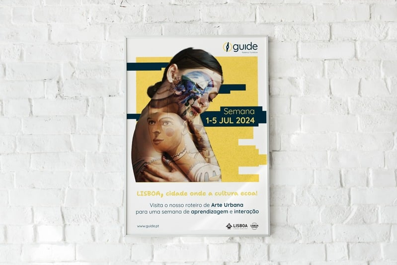
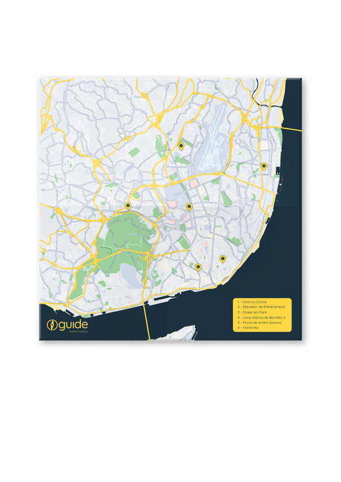
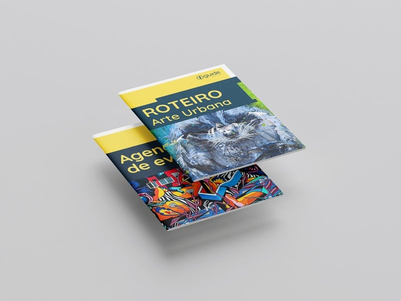
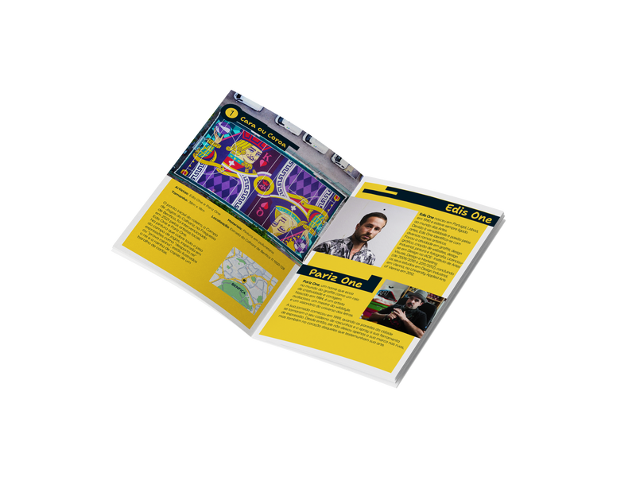
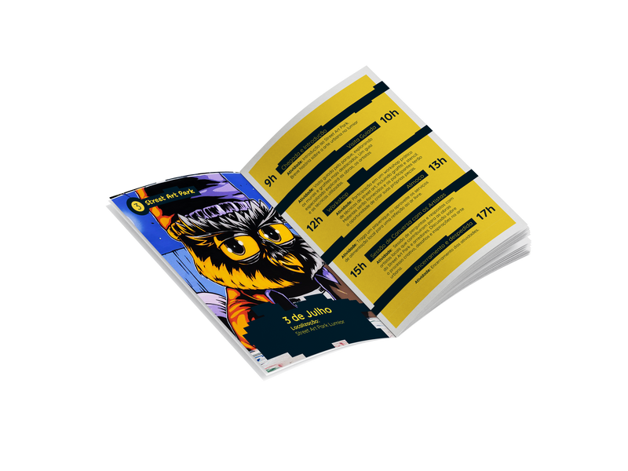
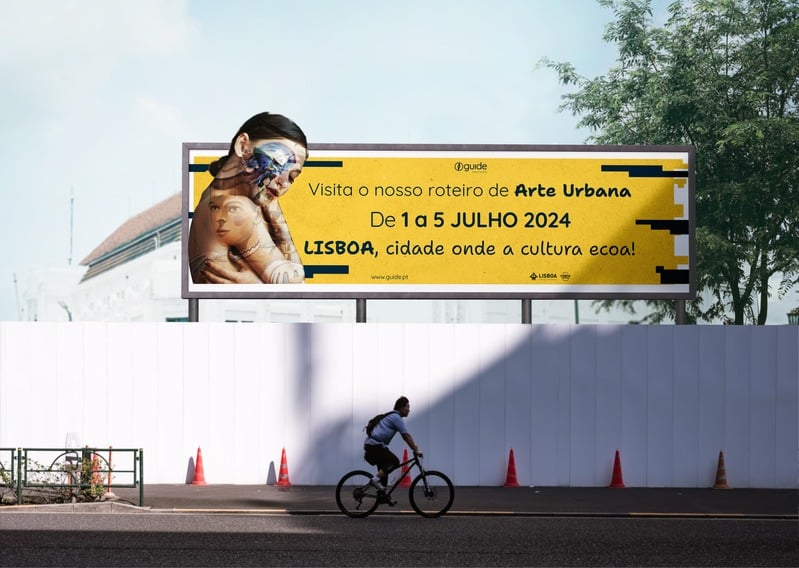
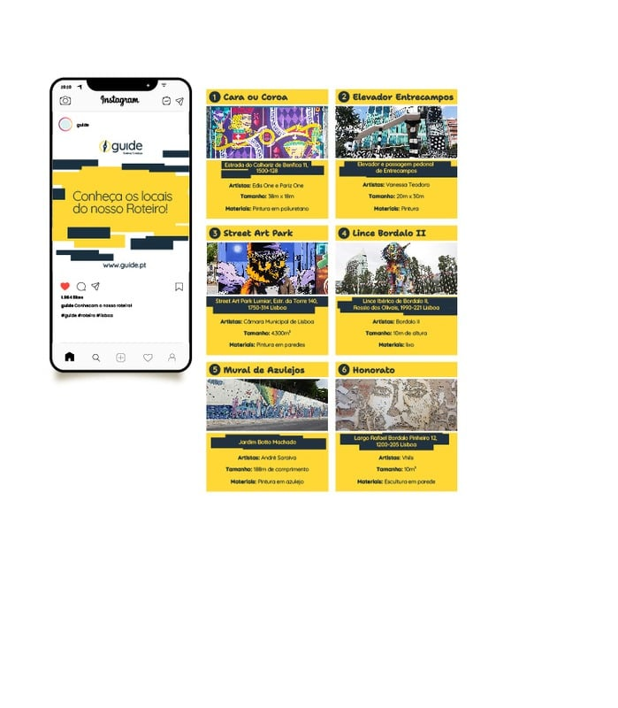
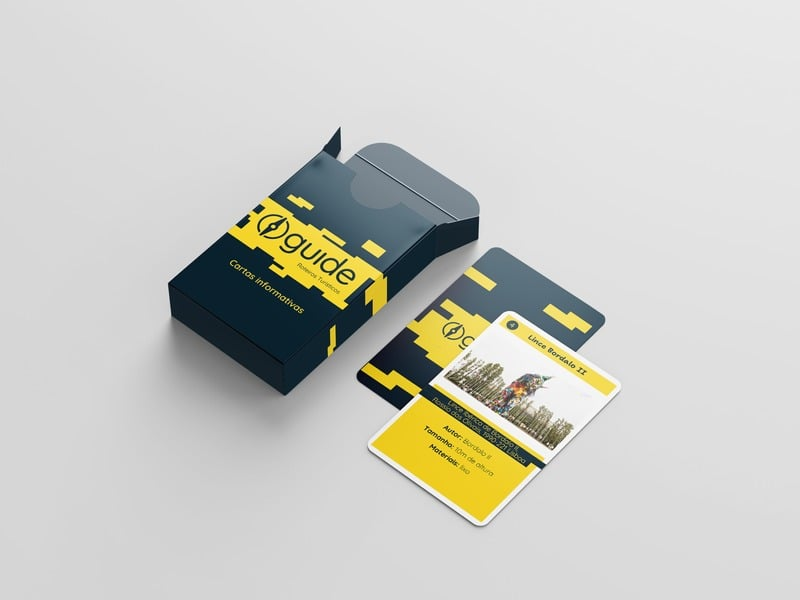
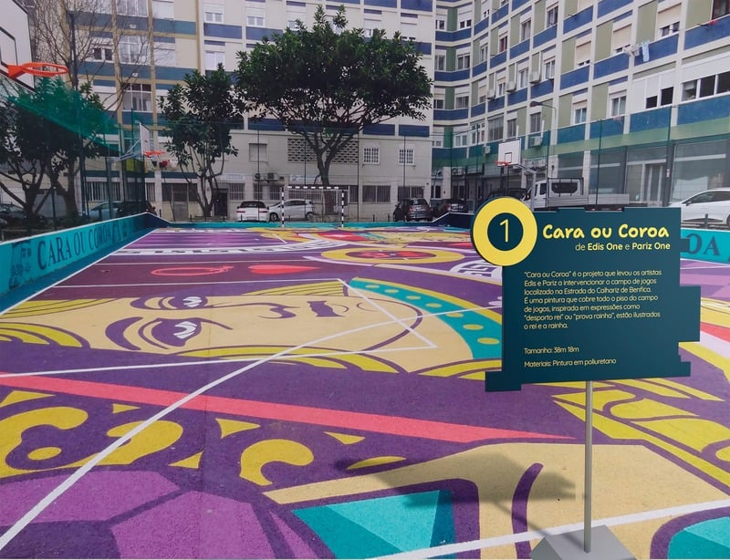

01 / 04
Guide
Para o meu projeto final de curso criei o “Guide”, um roteiro de arte urbana por Lisboa, e todas as peças de comunicação à volta dele — da identidade visual ao mapa, redes sociais e vídeo. Fiz tudo com as ferramentas da Adobe Creative Cloud.
Pantone 108 CC0 M15 Y85 K0 · R255 G215 B65
#FFD642 · RAL 1018
#FFD642 · RAL 1018
Pantone 546 CC95 M70 Y50 K55 · R0 G45 B60
#002C3E · RAL 5011
#002C3E · RAL 5011
Aa
Tipografia — Quicksand
ABCDEFGHIJKLMNOPQRSTUVWXYZ
abcdefghijklmnopqrstuvwxyz
0123456789 @ , . # € ! ?
abcdefghijklmnopqrstuvwxyz
0123456789 @ , . # € ! ?








